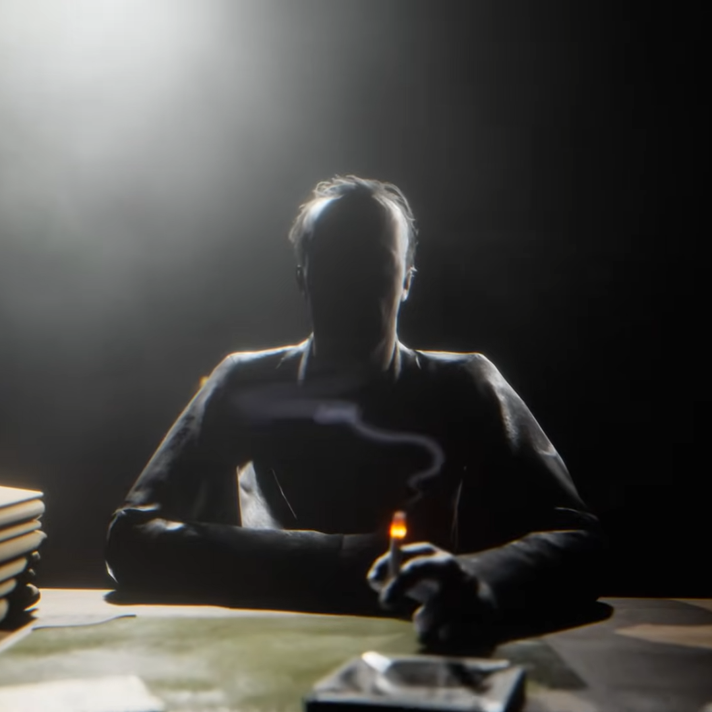

Хендрик Истерман
Директор проекта | Учёный
Локация: Объект Синьяла
Роль: Руководитель проекта «Тенева 2»
Хендрик Джолиет Истерман (ориг. Hendrick Joliet Easterman) — главный антагонист игры The Outlast Trials, весомый учёный корпорации Мёркофф и директор проекта «Тенева 2» на объекте Синьяла.
Биография
Ранняя жизнь
В первой половине 20 века Хендрик Истерман и его брат Стэнли жили со своей матерью, которая поддерживала в доме жестокую дисциплину. Она издевалась над своими сыновьями, вырывая им волосы с головы. У брата Стэнли ещё с детства были суицидальные наклонности, но мать скрывала это от «хрупкого сыночка» Хендрика. Издевательства со стороны матери закончились, когда братья Истерманы повзрослели и покинули дом.
В начале 1950-ых годов, когда началась Корейская война, его брат Стэнли Истерман ушёл служить в корпус тылового обеспечения, где вскоре покончил жизнь самоубийством. Сам Стэнли в самой Корее никогда не был, но его смерть стала очень таинственной и трагичной для Хендрика Истермана, который из-за всего этого начал интересоваться промыванием мозгов, считая, что его брату просто-напросто промыли мозги солдаты Корейской народной армии.
Вербовка ЦРУ
В какой-то момент Хендрик Джолиет Истерман посещает выступление Аллена Даллеса в городе Принстон, где его замечают сотрудники ЦРУ. В январе 1953 года ЦРУ принимает решение завербовать Хендрика Истермана, с которым в Чикаго начинает собеседование сотрудник разведки Джеймсон Лоулер. Во времена Холодной войны сотрудники ЦРУ были заинтересованы «промывкой мозгов», поскольку им были известны случаи, когда американцы решали остаться на территории коммунистического Китая. Во время беседы Лоулер упоминает Стэнли Истермана, и именно его смерть стала предлогом, чтобы Хендрик согласился с предложением ЦРУ.
В феврале Хендрик Истерман прибывает в Гонконг, где он был уверен, что найдёт доказательства, опровергающие самоубийство его брата Стэнли. Он начинает расспрашивать ветеранов, гражданских и военнопленных КНА, чтобы найти убедительные доказательства специфического психологического программирования.
Через год, в начале 1954 года за 3 дня до повторного посещения Гонконга, доктор Хендрик Истерман прибывает в послевоенный Берлин, который напомнил ему о Второй мировой войне. Он даже задумался, что чтобы ни говорили о национал-социализме, всё это могло бы научить их инфраструктуре, пропаганде и руководству. Через несколько дней Истерман вновь прилетает в Гонконг, где он начинает тщательно изучать китайскую технику промывания мозгов. Он начинает исследовать всех жертв промывки мозгов, узнав от рядового Реймоуса про некого «невидимого призрака» Доктора Скиннера, которого он видел в своих галлюцинациях.
Лос-Аламос
В апреле 1954 года с Истерманом связывается Оливье Баранчик, являющийся помощником директора по поведенческой медицине лечебницы Маунт-Мэссив. Оказывается, какое-то время назад Лоулер поделился с Баранчиком открытиями, которые Истерман совершил в Гонконге. Теперь доктор Баранчик хочет, чтобы Истерман прибыл в Лос-Аламос и познакомился с работой учёных в их лабораториях. Спустя немного времени Хендрик Истерман отправился в Лос-Аламос, также ознакамливаясь с записями доктора Рудольфа Вернике. Доктор Истерман хотел бы, чтобы его жена Ирен также прибыла туда, но отдел кадров Мёркофф постоянно отклонял его просьбы.
В мае Истерман решается побеседовать с доктором Вернике, поскольку Оливье Баранчик считал, что исследования Хендрика должны органично сочетаться с работой немца с микроволновыми сигналами и «управляемой визуальной стимуляцией». Во время беседы Хендрик Истерман пытался заставить доктора Вернике прояснить намерения его экспериментов, однако немец сводил каждый разговор к психотерапевтическому подтексту германского фольклора. Рудольф Вернике также рассказывал на изначально обречённую природу всех гетеросексуальных отношений. После беседы Истерман был впечатлён доктором Вернике, считая его жизнерадостным и красивым мужчиной.
Синьяла
Летом 1954 года сотрудники Мёркофф и ЦРУ с помощью Истермана решают провести на объекте Синьяла в Аризоне огромный проект, который по их словам может положить конец всем проблемам в будущем. В разгар Холодной войны они хотели создать послушных солдат для сражений на коммунистических территориях. В августе 1955 года доктор Хендрик Истерман отправляется в Синьялу, и в тот момент отдел сбора информации Мёркофф занялся поисками людей для данного глобального эксперимента. В Синьяле доктор Истерман знакомится со многими новыми людьми, в том числе и с Брэдли Авелльянос, которая была администратором данного комплекса.
В декабре доктор Истерман поручает сотруднику Клайду Перри найти харизматичных кандидатов на роль главных активов для будущего проекта «Тенева», которые будут контролировать остальных испытуемых. В конце концов на протяжении 1956 года Перри удаётся найти сумасшедшего сержанта полиции Лиланда Койла и не менее безумную бывшую телеведущую Филлис Футтерман. Для «Теневы» также было найдено огромное количество различных людей, в том числе подопытных из Маунт-Мэссив и Лос-Аламоса, которые стали экс-попами на полигонах.
Проект «Тенева» и его крах
В какой-то момент проект «Тенева» на Синьяле был запущен, однако к лету 1958 года ситуация постепенно начала выходить из-под контроля. Количество жертв одних только экс-попов превысило за сотню, не говоря уже о сотрудниках Мёркофф. В итоге из-за небезопасности проекта стали поступать настоятельные рекомендации о немедленном прекращении работы. Доктор Истерман брал на себя полную ответственность за все инциденты, в то же время понимая, что он мало, что мог бы сделать. Несмотря на все усилия, Мёркофф не смогли сдерживать контроль над испытуемыми, и проект «Тенева» был прикрыт. Главные активы и экс-попы планировались в кратчайшие сроки быть ликвидированными, однако по какой-то причине они были оставлены.
Проект «Тенева 2»
После краха «Теневы» доктор Истерман горел желанием запустить вторую фазу проекта, слегка отличавшуюся от первой. Оставленные главные активы и экс-попы, а также зоны испытаний могли бы послужить «наковальней» для других испытуемых. Хендрик Истерман поручил найти новых людей, но не сумасшедших травмированных безумцев, а тех, кто нелюбим и неприметен.
В итоге главное управление Мёркофф разрешило эксплуатацию проекта «Тенева 2», и его явным отличием являлось то, что «терапия нейронного вмешательства» будет заменена на «терапию неявного внушения». Расходы на новый проект оказываются значительно меньше, поскольку многие вещи с первой фазы, такие как экс-попы и полигоны будут перенесены в «Теневу 2». Новыми испытуемыми оказываются реагенты, которых доктор Истерман хотел превратить в «ничто» и сделать из них послушных триггерных агентов для операций Холодной войны. Однако здесь Истерман решает физически не появляться перед испытуемыми, желая, чтобы реагенты и экс-попы видели в нём фигуру «любящего отца».
В конце лета 1958 года проект «Тенева 2» был запущен, и приток финансирования был настолько огромным, что Хендрик Истерман на мгновение подумал, что это результат какой-то бухгалтерской ошибки. Вскоре после запуска второй фазы примерно в 1959 году в Синьялу из Лос-Аламоса прибывает сам доктор Вернике, однако его особо не интересовала работа учёных, ведь более интересным занятием он посчитал следить через защитное стекло за деятельностью испытуемых реагентов, которые восстанавливались в комнате для отдыха. Немецкий учёный и не предполагал, что Истерман всё время наблюдает за ним из своего укрытия, анализируя его поведение и действия.
Порой Истерману приходилось беседовать с Брэдли Авелльянос, которая хотела узнать от доктора всю информацию, связанную с Синьялой. Осенью 1959 года на объект прибывает новый кандидат на роль главного актива, безумный гангстер Франко Барби. Доктор Истерман, также как с Койлом и Гусберри несколько лет назад, придумывает для реагентов новое испытание с присутствием Барби, а также как должен будет выглядеть полигон.
Новый 1960 год
Зимой, во время празднования нового 1960 года, в Синьяле среди сотрудников Мёркофф прошла вечеринка, и сам доктор Хендрик Истерман был не против немного повеселиться. Сотрудники начали веселиться в корпоративном кафетерии, но вскоре опустились вниз, чтобы посмотреть на Франко Барби, которого благодаря Клайду Перри недавно доставили в Синьялу. После этого выпившие сотрудники Мёркофф вместе с Истерманом отправились в аптеку Синьялы, чтобы испробовать на себе больше так называемых «дурманящих» препаратов для большего веселья. Вскоре, когда вечеринка уже подходила к концу, пьяный доктор Истерман встретил Сидни Готтлиба.
После празднования нового года у доктора Истермана было сильное трёхдневное похмелье, и утром 3 января он замечает, что у него выпало слишком много волос. Этим же днём доктор Истерман, не желая расставаться со своей шевелюрой, отправился на процедуры с берлинской лазурью. Вечером он в ужасе находит в кармане своей одежды с вечеринки чуть больше грамма таллия, понимая, что кто-то хотел его отравить во время празднования нового года. Выпадение волос было не из-за опьянения, вызванного подозрительным алкоголем, как изначально думал Истерман, а из-за отравления таллием. В итоге доктор Истерман ходил на процедуры с берлинской лазурью три дня, а к 6 января ему к счастью удалось избавиться от трёхдневного запора.
Развод с женой
Вскоре управление одобрило в Синьяле новую временную программу «Обратный отсчёт», где у реагентов было ограниченное время для испытаний путём взрывного устройства на их груди. В конце марта 1960 года доктор Истерман и Мозес Скарфиотти наведываются к инженеру Корнелиусу Ноуксу, чтобы попросить его сделать данные взрывные устройства. В ходе диалога Истерман упоминает слова своей жены Ирен, на что получает поправку от Скарфиотти, что она уже бывшая жена.
Хендрик Истерман не мог ничего понять, но вскоре он находит у себя в папке свидетельство о разводе, который якобы произошёл ещё более шести месяцев назад. Истерман приходит в недоумение, ведь он не помнит этого, а в свидетельстве была его идеальная подпись. Он узнаёт, что Ирен развелась с ним за пренебрежение браком, так как не виделась с ним уже несколько лет, не получая при этом никаких писем и звонков. После этого доктору становится морально нехорошо, ведь он всё ещё любит её, но в тот же время он яростно надеется, что она уже умерла. Хендрик Истерман так и не понял, либо его так сильно начала подводить память или же развод с женой произошёл и вовсе без его ведома.
Побег Амелии Колльер
11 апреля 1960 года реагенту Амелии Колльер удаётся сбежать из зоны испытаний и скрыться где-то за стенами комплекса. После этого среди сотрудников Мёркофф начинается суматоха, и все улики сводились к тому, что некому испытуемому действительно удалось покинуть полигон. За расследование немедленно берётся директор отдела исторических изысканий Клайд Перри, но его допросы к сожалению для Мёркофф не приносят никаких результатов. Слухи о беглянке по итогу доходят и доктора Истермана, который был совершенно не готов к таким событиями, где его контроль был нарушен. Среди администрации Синьялы начинается суета, и о сбежавшем реагенте узнаёт администратор комплекса Брэдли Авелльянос.
Истерман был в панике, не понимая, как реагенту удалось это сделать, ведь они считали, что побег с полигона невозможен. Доктор в полном страхе начал думать, что теперь правление Мёркофф избавится от них, но Авелльянос попыталась его успокоить. В паранойе Истерман начал употреблять таблетки, находясь в полном возмущении, ведь влиятельные сотрудники Мёркофф недоговаривали ему всю информацию. 14 апреля в порыве безысходности Истерман решает применить на испытуемых наркотические вещества, под действием которых один из реагентов произносит имя «Амелия».
16 апреля Истерман с Авелльянос находят всё больше файлов с упоминанием Амелии, и тогда они решают допросить реагента Доррис Риттер. В итоге доктор Истерман обращается к Клайду Перри, и в ходе диалога они вспоминают Генриетту Граббс. Директор отдела исторических изысканий был уверен, что история с Генриеттой могла бы пригодиться на допросе с Доррис, однако Истерман решительно отклонил эту идею. В ходе диалога он также подчеркнул, что Перри может пугать Доррис, но ни в коем случае не должен причинять ей боль. В тот же день Клайд Перри посещает комнату отдыха и допрашивает Доррис, узнав, что у Амелии фамилия Колльер и слух, что она искала своего партнёра Дэймона Грина. Клайд Перри по итогу допрашивает Дэймона, но поскольку тот на прорез отказывался что-либо рассказывать про Амелию, тот убивает его.
17 апреля Истермана всё больше окутывает паранойя, и это замечают его коллеги, в особенности Клайд Перри. Доктор начинает косо смотреть даже на других сотрудников Мёркофф, особенно на архитектора Мозеса Скарфиотти. Истерман повсюду замечает его отпечатки, а один из сообщников Амелии называет имя «Мозес». По итогу Хендрик приказывает другим сотрудникам скопировать в целях безопасности всю документацию Мёркофф и строго доставить к нему в кабинет. Тем временем доктору также сообщают, что смерть его брата Стэнли гораздо более мутная, чем он ещё считал всё это время. Однако для Истермана всё это было лживыми слухами, и рассудок доктора ещё больше начинает стремительно уходить вниз.
Изоляция
Доктор Истерман по итогу не выдерживает все происходящие события, и в полном безумии и паранойи баррикадируется в своём кабинете. Имя из запасов лишь джин с амфетамином, директор проекта перестал выходить на связь, заставляя сотрудников Синьялы усомниться в его вменяемости. К 21 апреля активность Амелии Колльер на объекте значительно повысилась, и руководство Синьялы думало, как решить эту неприятную для них проблему.
Мозес Скарфиотти рассказывает, что все табельные карточки для управления шаттлом находятся в кабинете Истермана, который всё также забаррикадирован. Тем же утром Клайд Перри и Мозес Скарфиотти в сопровождении охраны вышибают дверь в кабинет Истермана, обнаруживая доктора с расширенными зрачками, голым и вымазанным кровью вперемешку с экскрементами. Имя множественные рассечения по всему телу, обезумевший Истерман выкрикивал неразборчивые слова, связанные с солнцем и Скиннермэном. Когда его схватывают сотрудники Мёркофф, он начинает биться в припадке и пускать пену изо рта. Из-за всего этого сотрудникам пришлось усыпить доктора и зафиксировать его бессознательное тело на медицинской койке.
22 апреля Брэдли Авелльянос начинает допрашивать Истермана, который в полной ярости требовал его немедленного освобождения. Он обвинял их в том, что все лгали ему, также подчеркивая, что он знает все секреты Синьялы. Тем временем Амелия Колльер провоцирует давно спланированный бунт реагентов и устраивает им побег. В комплексе начинается тревога, и правлению Синьялы пришлось отправить охранников Мёркофф для урегулирования бунта. Истерман по итогу восстанавливается, но его отчаянию не было предела, ведь мало того, что он остался без семьи, дак теперь ещё и его испытуемые пытаются сбежать от него.
К 24 апреля жертв побега, как реагентов и экс-попов, так и сотрудников Синьялы, стало слишком много. Многие охранники Мёркофф погибли от руки Генриетты Граббс, которая как оказалось всё ещё жива и несколько месяцев живёт в закрытом пункте по утилизации биоотходов. Тем не менее другой проблемой для корпорации было то, что десятки реагентов оказались на свободе.
Плен Амелии
24 апреля во время расследования Клайду Перри по итогу удаётся обнаружить Амелию Колльер в тоннеле Синьялы, нанеся ей огнестрельное ранение. В ходе схватки Клайд Перри погибает, оказавшись разрезанным пополам проехавшим вагоном. Амелию же схватывают и усыпляют сотрудники охраны Мёркофф. Экс-поп Генриетта Граббс, тайно живущая на старом объекте по утилизации биоотходов также была успешно схвачена. По итогу Истерман, смотря на камеру с Генриеттой, решает усовершенствовать её и снова выпустить на испытания в качестве нового экс-попа Егеря.
Доктор Истерман со скорбью принял смерть Клайда Перри, но особой грусти в его глазах не было, ведь тот для него был всего лишь так называемым «гадким маленьким цепным псом». Истерман решает выставить именно Перри виновником для правления Мёркофф, поскольку теперь он не сможет ничего возразить. Пленную Амелию же выставили напоказ в комнате отдыха, в качестве предупреждения для реагентов, и Истерман был в восторге, что такая угроза наконец устранена и получила свою участь.
Тем не менее среди правления Синьялы всё ещё шли обсуждения по поводу сбежавших во время побега реагентов, ведь их достаточно немало. Доктор Истерман решает, что со сбежавшими реагентами может разобраться давно выпущенный испытуемый Салливан Нот, которого они всё ещё могут контролировать. Им всего лишь стоит придумать и внушить ему красивую легенду и тем самым сделать неким пастырем для сбежавших реагентов.
The Outlast Trials
Когда нового пойманного реагента доставляют в Синьялу, первым делом учёные Мёркофф включают ему телевизор с обращением доктора Истермана. Глава проекта рассказывает, что не стоит бояться, ведь испытания помогут ему и сделают лучше. Он попытался внушить реагентам, что испытательные программы изменят жизнь человека в лучшую сторону, и после так называемого перерождения они якобы выйдут на свободу. После обращения Истермана учёные надевают на пленника прибор ночного видения и болезненно приковывают его к голове. После этого реагент отправляется на полигон «Особняк», где он начинает своё первое и вводное испытание. Там через записи он больше знакомится с доктором Истерманом, который таким образом подготавливал человека к будущим испытаниям.
После завершения вводного испытания, на пути в комнату отдыха, реагент снова смотрит по телевизору обращение доктора Истермана, который рассказывает, что это прекрасно, когда всё происходящее находится под контролем. После этого он советует ему в комнате отдыха поразмыслить над всем, что он узнал и готовиться к следующим испытаниям.
Разные телевизионные обращения доктора Истермана реагенты будут смотреть всегда, когда они отправляются на шаттле на испытания. После прохождения испытания, Истерман будет оценивать человека, и если оценка будет отличной, он с радостью похвалит реагента. Однако, если же оценка будет ниже среднего или испытуемый и вовсе провалил испытание, то Хендрик Истерман морально оскорбит реагента, сравнивая его с чем-то отвратительным.
После накопления 100 жетонов в ходе прохождения испытаний реагент становится готовым к протоколу освобождения, и его снова отправляют на полигон «Особняк». По пути туда человеку вновь приходится смотреть телевизионное обращение доктора Истермана, который обещает, что после данного финального теста реагент наконец-то покинет это место. Он признаётся, что реагент будет идеальным оружием и самым невинным дитя, и за ним будущее. После этого реагента выпускают на полигон и он отправляется на своё последнее испытание, которое в конечном итоге выпустит его из Синьялы, но всё же не дарует обещанную свободу.
Галерея


Интересные мелочи
- Известно, что Хендрик Истерман употребляет запрещённые вещества, такие как ЛСД и амфетамин.
- В файлах игры можно найти его ранние реплики, которые озвучил сценарист Джей Ти Петти.